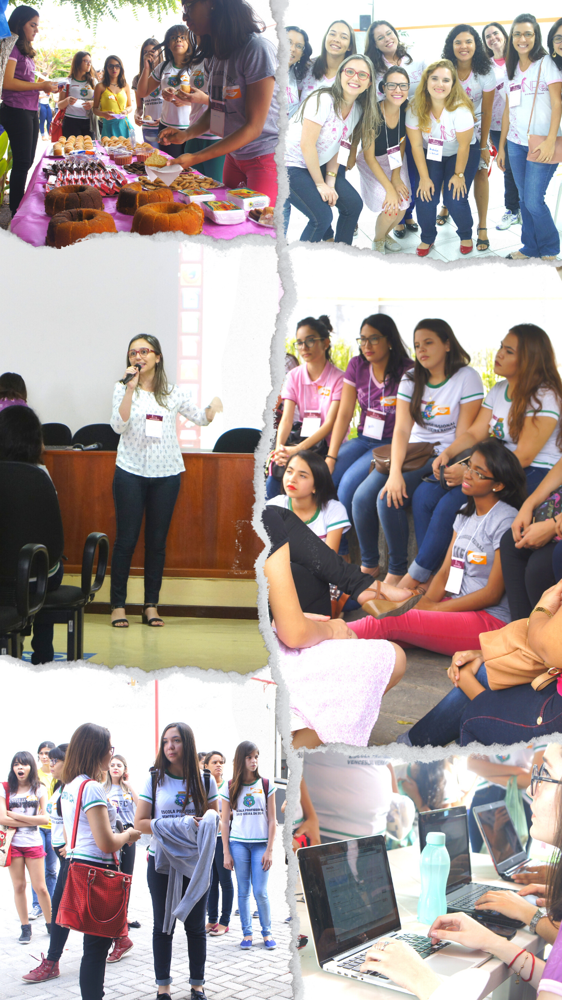
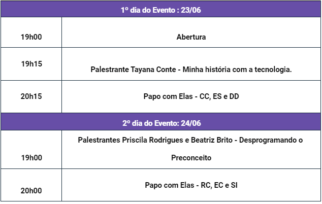

Atrair mais mulheres para a
área da Computação
EDIÇÕES
< Conheça também as edições anteriores >
A edição de 2014 foi organizada pelo grupo PET – TI juntamente com alunas voluntárias da UFC – Campus Quixadá. O evento aconteceu no próprio campus no dia 28 de Novembro de 2014. As atividades desenvolvidas foram:
• Apadrinhamento, onde as alunas voluntárias reuniram pequenos
grupos de garotas do Ensino Médio e se apresentaram como a
“Madrinha” daquele grupo. As “Madrinhas” ficaram à disposição,
tiraram dúvidas durante todo o evento, incentivando sempre para
que as meninas participassem.
• Palestra “Mulheres na Tecnologia”, dada pela Profa. Ingrid
Monteiro.
• Depoimentos de alunas representantes dos cursos do campus, onde
relataram suas experiências, além de depoimentos de alunas que
participaram do programa Ciências sem Fronteiras do Governo
Federal.
• Tour para apresentar o Campus de Tecnologia da UFC. Oficinas
curtas interativas que abordam temas introdutórios sobre
Introdução à Programação, empreendedorismo na TI e a Hora do
Código.
• Dinâmica para explorar os conteúdos apresentados no evento.
A edição de 2015 foi realizada pelo grupo PET – TI da UFC – Campus Quixadá, com apoio do Instituto Federal do Ceará (IFCE) – Campus Quixadá. O evento aconteceu no campus do IFCE no dia 18 de Novembro de 2015. As atividades desenvolvidas no dia foram:
• Apadrinhamento, onde alunas voluntárias da UFC reuniram pequenos
grupos de garotas do Ensino Médio e se apresentaram como a
“Madrinha” daquele grupo. As “Madrinhas” ficaram à disposição das
garotas para tirar dúvidas durante todo o evento, incentivando-as
a participar ativamente.
• Palestra “Mulheres na Computação” feita pela Profa. Paulyne
Matthews Jucá, visando motivar as participantes, mostrando-as a
área da Computação.
• Mesa Redonda composta por alunas e professoras da UFC – Campus
Quixadá, onde foram respondidas perguntas sobre mercado de
trabalho e vida universitária.
• Depoimentos de alunas representantes dos cursos do campus, onde
relataram suas experiências, e depoimentos de alunas egressas
sobre o mercado de trabalho e a vida acadêmica.
• Apresentação do depoimento motivacional gravado pela Camila
Achutti.
A edição de 2016 foi realizada pelo CACC e pelo PET – TI, com colaborações do PACCE (Programa de Aprendizagem Cooperativa em Células Estudantis). Além da parceria com o CASISB, o Centro Acadêmico de Sistemas de Informação da Unicatólica. O evento aconteceu no campus da Unicatólica no dia 19 de Novembro de 2016. As atividades desenvolvidas foram:
Palestra “O desafio de ser mulher na Computação”, com a Profa. Ticiana Linhares. Pequenos grupos de conversas informais chamados de “TI por Elas”, onde foram discutidos temas como mercado de TI, graduação e vida universitária. Oficinas e curtas interativas que abordam temas introdutórios sobre Lógica da Computação, Algoritmos e tecnologias em geral.
A edição de 2019 foi realizada pelo grupo PET – TI da UFC – Campus Quixadá. As atividades desenvolvidas no dia foram:
• Apadrinhamento, onde alunas voluntárias da UFC reuniram pequenos
grupos de garotas do Ensino Médio e se apresentaram como a
“Madrinha” daquele grupo. As “Madrinhas” ficaram à disposição das
garotas para tirar dúvidas durante todo o evento, incentivando-as
a participar ativamente.
• Palestra “Softwares podem ser preconceituosos?” feita pela
Profa. Paulyne Matthews Jucá, visando motivar as participantes,
mostrando-as a área da Computação.
• Mesa Redonda composta por alunas e professoras da UFC – Campus
Quixadá, onde foram respondidas perguntas sobre mercado de
trabalho e vida universitária.
• Depoimentos de alunas representantes dos cursos do campus, onde
relataram suas experiências, e depoimentos de alunas egressas
sobre o mercado de trabalho e a vida acadêmica.
• Minicurso de Arduino para iniciantes.
Data: 23 e 24 de junho de 2021
Local: segunda edição on-line,
conforme orientações de organizações de saúde
Inscrições:
https://forms.gle/ye1FcsAUfMGTgyJB6, até dia 22/06, terça-feira. É
necessário para as alunas do ensino médio que servirá para a
criação de certificado de participação e aos demais para
divulgação do link da transmissão ao vivo e cronograma por e-mail.
Além disso, para os discentes do Campus terá formulários no dia
para horas complementares.
O evento será transmitido pela página do Campus da UFC em Quixadá
no Facebook:
www.facebook.com/campusufcquixada
e na Twitch do PET TI.
Programação:

• 23 de junho (quarta-feira)
19h – Abertura do evento
19h15 – Minha história com a tecnologia,
com Tayana Conte.
Professora Associada da Universidade Federal do Amazonas, com
experiência na área de Ciência da Computação, com ênfase em
Engenharia de Software e IHC, atuando principalmente nos temas
Engenharia de Aplicações Web, Avaliação de Usabilidade, Engenharia
de Software Experimental, Usabilidade de Aplicações Web e
Qualidade de Software.
20h – PAPO COM ELAS – Navegando pelas curiosidades e principais
informações dos cursos Campus Quixadá – Ciência da computação,
Design Digital e Engenharia de Software
Com Kassiane Façanha aluna de Ciência da Computação, Yonara
Damasceno discente de Design Digital e Mônica Yasmin estudante de
Engenharia de Software.
• 24 de junho (quinta-feira)
19h – Desprogramando o Preconceito,
com Beatriz Brito e Priscila Rodrigues.
Beatriz Brito é engenheira de Software pela Universidade Federal
do Ceará – Campus Quixadá. Atualmente é pesquisadora na
Universidade Federal da Bahia, atuando principalmente em Interação
Humano Computador, com ênfase em Design de Interação, Semiótica,
Design Participativo, Computação & Educação. Priscila Rodrigues é
engenheira de Software pela Universidade Federal do Ceará – Campus
Quixadá. Atualmente é pesquisadora na UFC, atuando principalmente
na área de Banco de Dados, com ênfase em Aprendizagem Automática,
Mineração de Dados, Mídias Sociais e Big Data.
20h – PAPO COM ELAS – Navegando pelas curiosidades e principais
informações dos cursos Campus Quixadá – Redes de computadores,
Engenharia de Computação e Sistemas de Informação
Com Laura Queiroz aluna de Redes de Computadores, Paula Feitosa do
curso de Engenharia de Computação e Ana Kely aluna de Sistemas de
Informação.